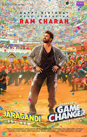

Konidela Ram Charan born 27 March 1985 is an Indian actor, film producer, and entrepreneur who primarily works in Telugu cinema. He is one of the highest-paid actors in Indian cinema and has featured in Forbes India's Celebrity 100 list since 2013. Charan is the recipient of several awards, including four Filmfare Awards and two Nandi Awards.
Charan made his acting debut with the action film Chirutha (2007), a box office hit, winning the Filmfare Award for Best Male Debut – South. He rose to prominence starring in S. S. Rajamouli's fantasy action film Magadheera (2009), the highest-grossing Telugu film of all time at the time of its release, winning the Filmfare Award for Best Actor – Telugu. He went on to star in notable films such as Orange (2010), Racha (2012), Naayak (2013), Yevadu (2014), Govindudu Andarivadele (2014), and Dhruva (2016).
GAMECHANGER
for more updates CLICK HERE